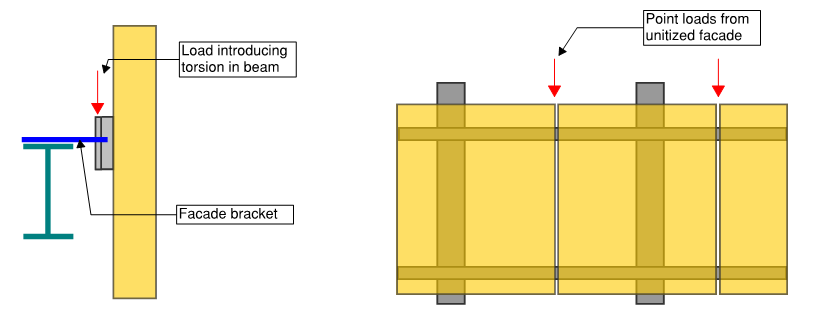
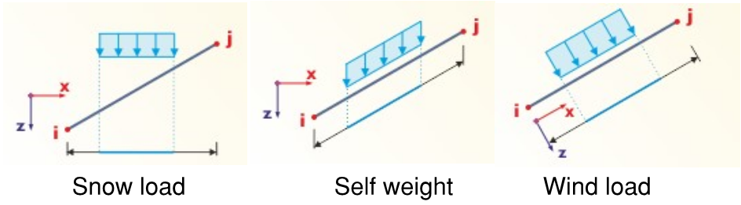

Loads and combinations #
Load types #
The toolset you are most likely to have, is:
- Imposed forces:
- Nodal loads
- Member loads
- Uniform load;
- Linearly variable load;
- Nodal load on member.
- Surface loads:
- Uniform load;
- Linearly variable load;
- Nodal loads
- Imposed displacements – typically used to represent temperature or
shrinkage effects;
- On Members;
- On surfaces;
For each of load types there will be few main parameters:
- Magnitude
- Direction of load;
- Local/Global/Custom axis
And then there will be loads that are generated by software:
- Area loads simplified as loads on members:
- Distribution one-way;
- Distribution two-ways;
- Imperfections or Equal horizontal forces (EHF),
- In some software, the generated wind/snow may be defined completely separately from other load cases.
Note on nodal load application. If you apply a nodal load to surface element, it will inevitably cause a stress peak. If this is overall building model and your mesh is quite coarse – nothing to worry about. However, if this is some local model, then it is sensible to apply this nodal load as UDL on area as defined in code. An extreme example of this is design of glass panes where you MUST consider the area of point load to do a reasonable design.
Load cases #
The commentary in this section assumes you are creating an overall model of building.
Generally, I advise to keep as little number of load cases as possible. However, do separate loads that are applied at different times – i.e. consider basic construction sequence. .e.g. use separate cases for DL/SDL/Facade
Dead load / Self-weight #
- Most programs allow you to change the direction of dead load. This may be relevant for assessing some parts of structure during lifting/erection.
- For lightweight and lightly loaded Timber/Steel structures, I would generally advise to use factor 1.1 (i.e. 10% added) to account for weight of connections.
Superimposed Dead Load #
- Typically, these are finishes;
- Part that sometimes gets missed in overall building models – weight of stairs inside stability cores.
- My unpleasant experience is that the buildup of finishes might change even at late stage of the project. I suggest that you are generous with your SDL assumptions.
Façade #
- A very common case if to add this as linear load on slab edge. This is completely appropriate for most of the cases.
- I always suggest this keeping as a separate case, instead of adding to SDL – results from this case may be very important for façade contractor (and I have been working for one such contractor).
- Be careful if your building will have “unitized” façade.
- Firstly – the load will be applied in discrete points – and if the width of units are big enough, you might end up with worse situation because of point loads applied at mid-span.
- Secondly – if the façade is “cantilevered” out, then there will be an additional moment on slab edge. If you have an in-situ concrete slab, don’t worry. However, if you have steel edge beams – note that there may add additional torsion imposed.
Load application from unitized facade

Live loads #
-
Pattern loading. Here is your chance to create a million load combinations! But please don’t:
- In most of cases, considering 5x arrangements will be enough.
- One direction – odd and even spans loaded;
- Other direction– odd and even spans loaded;
- Checkerboard.
- The alternative to pattern loading is to assess single floor and after this assessment, apply a certain additional factor to live load. Again – this is more efficient for concrete buildings because the live load is relatively smaller part of overall SLS/ULS load.
- Be clear on why you are modelling the pattern loading. Are you looking for a worst-case scenario for columns or for continuous beams/slabs?
- In most of cases, considering 5x arrangements will be enough.
-
Don’t forget about point loads defined in code. This is unlikely to be important for overall building models or model with large spans. However, for local checks and small spans in public buildings – these can and will be governing.
-
Lightweight partitions – stud walls or glass walls. Whether these are “Live load” or “SDL” are disputable. There was a good article about this in SCI journal and I personally agree that these should be added as live loads, because they can be moved during the design life of building and, thus, create pattern load effects. Note that ASCE-7 also has “partitions” under live loads section.
-
Load reduction factors. Eurocodes allows to reduce loads based on size of area that load is applied and the number of floors above (for columns). I strongly suggest these reductions to use only if absolutely needed to justify the design. It is extremely easy to get lost in these reductions – where they will apply (and how they work together with pattern loading, if considered).
-
[Climate - Wind, snow, ice, sand, rain, flood load.]{.underline}
Wind loads #
- These are acting perpendicular to the surface – therefore handy to apply in local axis of member;
- For overall building models – almost every program will have some “generation” tool.
- Always start with wind load in 4 directions. However, remember the famous case with CitiCorp building which could have collapsed because diagonal (quartering) winds were not considered.
- Depending on building and construction code you are designing to, you may be required to assess “twisting” effects due to uneven wind pressure.
Snow loads #
-
In global vertical direction.
-
Note that depending on location, snow drifts of even accidental snow load may govern.
-
Under the “snow” loads I also want to note that there will be regions in the world where rain or sand loads will be relevant.
Load application directions

Imperfection (EHF) #
- Technically, these are just a horizontal component of any vertical load;
- Only to be considered at ULS (according to Eurocodes);
- At least 4 directions – so theoretically for DL, SDL, Façade, LL – you are looking at 16 cases;
- In my experience, it is worth to combine all DL+SDL+Façade+LL EHF into one case per each direction (i.e. total 4 cases). Usually the EHF will be a relatively small portion of horizontal loads (compared to wind) and therefore slightly conservative assumption of applying all at the same time will pay back in significantly reduced number of load combinations.
- Also, even if your software is calculate EHF automatically, this is
the right time to get your excel spreadsheet out and calculate
manual load takedown.
- How does manual takedown compare to sums in model?
- How does automatically calculated EHF compares to vertical load sums in model?
Robustness - avoiding disproportionate collapse #
Robustness should be a key consideration when designing the building. This is a large topic and I won’t be discussing it thoroughly in these notes. Two areas I want to highlight here:
- It is likely that some of your building walls/columns will be “key
elements”, meaning that they should resist 34kN/m2 accidental
load (this is according to EN 1991-1-7 section 3.3, may differ in other codes).
Alternative is to assess a building without these elements – “taking out” column and wall and looking that the effect is on overall structure. - Connections should be able to take tie forces in accidental case. For Concrete this it usually easily satisfied using detailing. However, for steel, it may be that your connection design gets governed by robustness requirements, instead of forces from FE model.
Other #
I have very little experience with ground pressures or seismic loading and therefore these are not covered in my notes.
Creating set of combinations #
Do you know what each load combination in your model represents? If not, then there are too many! I have seen models with 300+ automatically generated load combinations with names like “Gk + Qk1 + Qk3 + S”. A nightmare to check and understand what actually governs the design.
Questions to ask yourself:
- Which are the main groups of variable actions, how many variations for each. E.g. “wind” would be one of the main groups.
- Which of the variable loads may be governing?
- Which of the variable loads have small enough effects that they can be considered to be “always acting” and taken without any reduction coefficients? This would reduce number of combinations.
- Can any of the loads can be “beneficial” – i.e. reducing effects in some part of the structure. E.g. can there be tension in some parts of stability system, if the dead load is applied with factor 1.0 or 0.9 (depending on the building code)? If so, extra combinations are needed.
- Are any of loads “cancelling out” each other – i.e. working opposite directions on the same members?
- Even if you are strictly designing to Eurocodes, it is worth to have a look at combinations mentioned in ASCE-7. This relatively small number of combinations, gives you a good overview of what needs to be considered.
- I suggest that you mention the governing load in the combination name.
If you are designing according to Eurocodes – think about the reliability class of your building. One of the simplest ways to ensure reliability requirements for class 3 buildings (concert halls, grandstands etc.) is to multiply the “standard” safety factors (1.35 for dead loads and 1.50 for live) by 1.1. See EN 1990 Annex B for further information.
Load/result combinations #
There are two different approaches for combining load cases:
- Loads combinations = Combining loads from multiple cases and then doing calculation;
- Result combinations = Doing calculations for each load case separately and then combining (summing) results of cases;
Usually there are more combinations than there are load cases. Therefore summing the results and using “result” combinations is usually faster and it is very convenient to determine envelope of internal forces.
However, “result” combinations are not usable, as soon as the calculation is non-linear. In these cases, you must use “load” combinations:
- Non-linear material used;
- “P-delta” or “Large displacement” analysis used:
- Large lateral forces on vertical columns/walls;
- Tension/compression only elements used;
- Contact supports used;